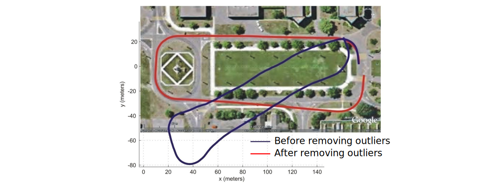

Robust Structure from Motion
When matching points between two images or more, matched points are usually contaminated by outliers (i.e., wrong matches).


Causes of outliers are:
- Repetitive features
- Changes in view point (including scale) and illumination
- Image noise
- Occlusions
- Image blur
For reliable and accurate visual odometry, outliers must be removed. This is the task of robust estimation.
Effect of Outliers on Visual Odometry
In the example below, we can see how outliers can greatly impact the result of our estimation process, especially over large distances.

Expectation Maximization (EM) Algorithm
EM is a simple method for model fitting in the presence of outliers (very noisy points or wrong data).
- It can be applied to all sorts of problems where the goal is to estimate the parameters of a model from the data (e.g., camera calibration, Structure from Motion, DLT, PnP, P3P, Homography, etc.)
Let’s review EM applied to the line fitting problem.
EM Applied to Line Fitting
- Calculate model parameters that fit all data points


- Estimate's Expectation: Calculate the residual error \(r_i\) for each data point and assign it a weight (e.g., \(w_i=e^{-r_i^2}\), where \(r_i\) is the point-to-line distance) representing the probability that such assignment is correct.


- Maximization Step: Re-estimate line parameters (e.g., using weighted least-squares: \(\min\sum w_i r_i^2\)).


- Iterate steps 2 and 3 until convergence.
- Select as inliers the data points with a weight higher than a given threshold.


Problem of EM Algorithm
The EM algorithm is sensitive to the initial condition. It is not robust to outliers if the initial condition is far from the ground truth.
Solutions:
- GNC Algorithm
- RANSAC Algorithm
Graduated Non-Convexity algorithm (GNC)
At each iteration, EM estimates the model by minimizing the sum of squared residuals \(\sum w_i r_i^2\). While this is a convex function, it is not robust to outliers.
Idea of Graduated Non-Convexity (GNC)12:
- Optimize a surrogate function \(\sum \rho_\mu(r_i)\), where \(\mu\) controls the amount of non-convexity.
- Start by solving the non-robust convex optimization function (\(\mu\rightarrow 0\), i.e., least squares) and gradually increase non-convexity (\(\mu \rightarrow \infty\)) until robustness is achieved.
- It is shown in 1 that GNC is robust up to 90% of outliers with fewer up to five times iterations than RANSAC.


Random Sample Consensus (RANSAC)
RANSAC3 has become the standard method for model fitting in the presence of outliers (very noisy points or wrong data).
- It is non-deterministic: you get a different result every time you run it.
- Significantly outperforms the EM algorithm, it is not sensitive to the initial condition, and does not get stuck in local maxima.
- It can be applied to all sorts of problems where the goal is to estimate the parameters of a model from the data (e.g., camera calibration, Structure from Motion, DLT, PnP, P3P, Homography, etc.)
Let’s review RANSAC for line fitting and see how we can use it to do Structure from Motion
- Select sample of 2 points at random from a set of points.
- Calculate model parameters that fit the data in the sample.
- Calculate the residual error for each data point.
- Select data that support current hypothesis.
- Repeat steps 1-4 \(k\) times.
- Select the set with the maximum number of inliers obtained within \(k\) iterations.
How many iterations does RANSAC need?
Ideally: Check all possible combinations of 2 points in a dataset of \(N\) points.
Number of pairwise combinations: \(\frac{N(N-1)}{2}\)
This value can be computationally unfeasible if \(N\) is too large. Example: For 1000 points you need to check all \(1000\cdot 999/2\simeq 500000\) possibilities
Do we really need to check all possibilities or can we stop RANSAC after some iterations?
Checking a subset of combinations is enough if we have a rough estimate of the percentage of inliers in our dataset.
This can be done in a probabilistic way.
Computing Number of RANSAC Iterations
For this section, let us use the following notation:
- \(N\): Total Number of data points
- \(w = \frac{\text{number of inliers}}{N}\)
- \(W = P\)(selecting an inlier-point out of the dataset)
Assumption
The 2 points necessary to estimation a line are selected independently
- \(w^2 = P\)(both selected points are inliers)
- \(1-w^2 = P\)(at least one of these points is an outlier)
Let \(k\) be the number of RANSAC iterations executed so far.
- \((1-w^2)^k = P\)(RANSAC never selected two points that are both inliers)
Let \(p = P\)(probability of success)
- \(1-p = (1-w^2)^k\)
Therefore the number of required iterations \(k\) can be calculated as follows:
By knowing the fraction of inliers \(w\), after \(k\) RANSAC iterations we will have a probability \(p\) of finding a set of points free of outliers.
Example
If we want a probability of success \(p=99\%\) and we know that \(w = 50\%\), then \(k=16\) iterations.
From the example above, we can see that this is far fewer than trying out all possible combinations.
Important
The number of points does not influence the minimum number of iterations (\(k\)), only \(w\) does!
RANSAC applied to General Model Fitting
- Initial - Let \(A\) be a set of \(N\) points
-
Repeat until maximum number of iterations \(k\) reached:
- Randomly select a sample of \(s\) points from \(A\)
- Fit a model from the \(s\) points
- Compute the distances of all other points from this model
- Construct the inlier set (i.e. count the number of points whose distance \(<d\))
- Store these inliers
-
The set with the maximum number of inliers is chosen as a solution to the problem
Tip
The formula for calculating the number of iterations is commonly written as a function of the fraction of outliers \(\epsilon\)
The Three Key Ingredients of RANSAC
In order to implement RANSAC for Structure From Motion (SFM), we need three key ingredients:
-
What’s the model in SFM?
- The essential matrix (for calibrated cameras) or the fundamental matrix (for uncalibrated cameras)
- Alternatively, \(R\) and \(T\)
-
What’s the minimum number of points to estimate the model?
- We know that 5 points is the theoretical minimum number of points for calibrated cameras
- However, if we use the 8-point algorithm, then 8 is the minimum (for both calibrated or uncalibrated cameras)
-
How do we compute the distance of a point from the model?
- Algebraic error
- Directional error
- Epipolar line distance
- Reprojection error
Applying 8-Point RANSAC to SfM Problem
Let’s consider the following image pair and its image correspondences (e.g., Harris, SIFT, etc.), denoted by arrows:


For convenience, we overlay the features of the second image on the first image and use arrows to denote the motion vectors of the features:
-
Randomly select 8 point correspondences:
-
Fit the model to all other points and count the inliers:
-
Repeat steps 1-2 \(k\) times, where \(k\) is:
\[ k = \frac{\log(1-p)}{\log(1-(1-\epsilon)^8)} \]
RANSAC Iterations \(k\) Vs. \(s\)
\(k\) is exponential in the number of points \(s\) necessary to estimate the model:
-
8-point RANSAC
- Assuming:
- \(p = 99\%\)
- \(\epsilon = 50\%\) (fraction of outliers)
- \(s = 8\) points (8-point algorithm)
\(k = 1177\) iterations
- Assuming:
-
5-point RANSAC
- Assuming:
- \(p = 99\%\)
- \(\epsilon = 50\%\) (fraction of outliers)
- \(s = 5\) points (5-point algorithm)
\(k = 145\) iterations
- Assuming:
-
2-point RANSAC (e.g., line fitting)
- Assuming:
- \(p = 99\%\)
- \(\epsilon = 50\%\) (fraction of outliers)
- \(s = 2\) points
\(k = 16\) iterations
- Assuming:
As observed, \(k\) is exponential in the number of points \(s\) necessary to estimate the model.
- The 8-point algorithm is extremely simple and was very successful; however, it requires more than 1177 iterations
- Because of this, there has been a large interest by the research community in using smaller motion parameterizations (i.e., smaller \(s\))
- The first efficient solution to the minimal-case solution (5-point algorithm) took almost a century (Kruppa 1913 → Nister 2004)
- The 5-point RANSAC (Nister 2004) only requires 145 iterations; however:
- The 5-point algorithm can return up to 10 solutions of \(E\) (worst case scenario)
- The 8-point algorithm only returns a unique solution of \(E\)
Is it possible to use less than 5 points for RANSAC?
Yes, if you use motion constraints!
Planar Motion Constraint
Planar motion is described by three parameters: \(\theta\), \(\phi\), \(\rho\):
Let’s compute the epipolar geometry:
- Essential matrix: \(E = [T_\times]R\)
- Epipolar constraint: \(\overline{p}_2^T E \overline{p}_1 = 0\)
Observe that \(E\) has 2 DoF (\(\theta\), \(\phi\), because \(\rho\) is the scale factor); thus, 2 correspondences are sufficient to estimate \(\theta\) and \(\phi\)4.
Can we use less than 2 point correspondences?
Yes, if we exploit wheeled vehicles with non-holonomic constraints.
Wheeled vehicles, like cars, follow locally-planar circular motion about the Instantaneous Center of Rotation (ICR).
Therefore \(\phi = \theta/2\) → giving only 1 DoF (\(\theta\)). Thus, only 1 point correspondence is sufficient5.
In this case, the essential matrix is therefore:
and the epipolar constraint gives us the following equation:
As only one degree of freedom needs to be estimated, we only need 1 iteration to find the inliers.
State of the Art
Differentiable RANSAC
Random Sample Consensus (RANSAC)6 is not differentiable since it relies on selecting a hypothesis based on maximizing the number of inliers (i.e., \(\arg\max\)).
- DSAC shows how sample consensus can be used in a differentiable way
- This enables the use of sample consensus in a variety of learning tasks.
Deep Fundamental Matrix Estimation
Deep Fundamental Matrix Estimation7 takes in two sets of noisy local features (coordinates + descriptors) contaminated by outliers and outputs the fundamental matrix.
Idea: Solve a weighted homogeneous least-squares problem, where robust weights are estimated using deep networks. Robust: Handles extreme wide-baseline image pairs
SuperGlue
SuperGlue8 is a learning feature matching with graph neural networks.
- Input: Two sets of noisy local features (coordinates + descriptors) contaminated by outliers.
- Output: Strong & outlier-free matches
- Combines deep learning with classical optimization (Graph Neural Networks, Attention, Optimal Transport)
- Robust: Handles extreme wide-baseline image pairs
-
Yang, Antonante, Tzoumas, Carlone, Graduated Non-Convexity for Robust Spatial Perception: From Non-Minimal Solvers to Global Outlier Rejection - International Conference on Robotics and Automation (ICRA), 2020 - PDF ↩↩
-
Blake, Zisserman, Visual Reconstruction - MIT Press, Cambridge, Massachusetts, 1987 ↩
-
M. A.Fischler and R. C.Bolles. Random sample consensus: A paradigm for model fitting with applications to image analysis and automated cartography - Graphics and Image Processing, 1981 - PDF ↩
-
"2-Point RANSAC", Ortin & Montiel, Indoor Robot Motion Based on Monocular Images - Robotica, 2001 - PDF ↩
-
Scaramuzza, 1-Point-RANSAC Structure from Motion for Vehicle-Mounted Cameras by Exploiting Non-Holonomic Constraints - International Journal of Computer Vision, 2011 - PDF ↩
-
E. Brachmann et al., DSAC - Differentiable RANSAC for Camera Localization - International Conference on Computer Vision and Pattern Recognition (CVPR), 2017 - PDF, Video ↩
-
Ranftl, Koltun, Deep Fundamental Matrix Estimation - European Conference on Computer Vision (ECCV), 2018 - PDF ↩
-
Sarlin, DeTone, Malisiewicz, Rabinovich, SuperGlue: Learning Feature Matching with Graph Neural Networks - International Conference on Computer Vision and Pattern Recognition (CVPR), 2020 - PDF, Code ↩